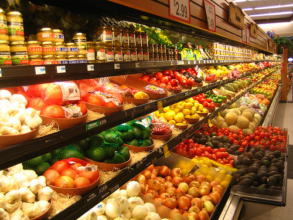
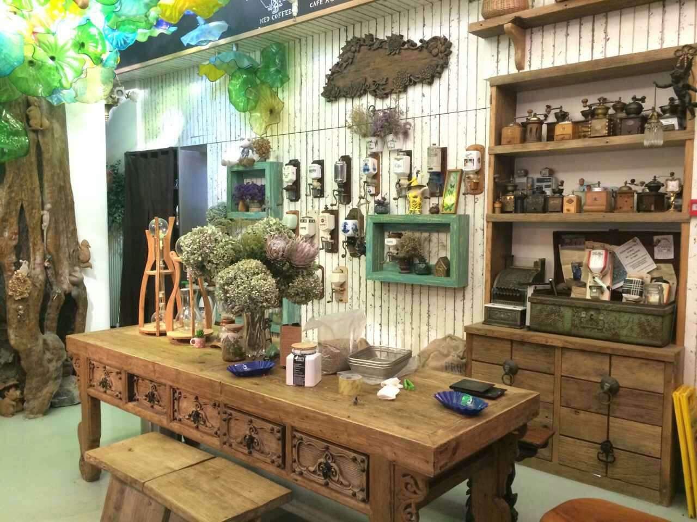
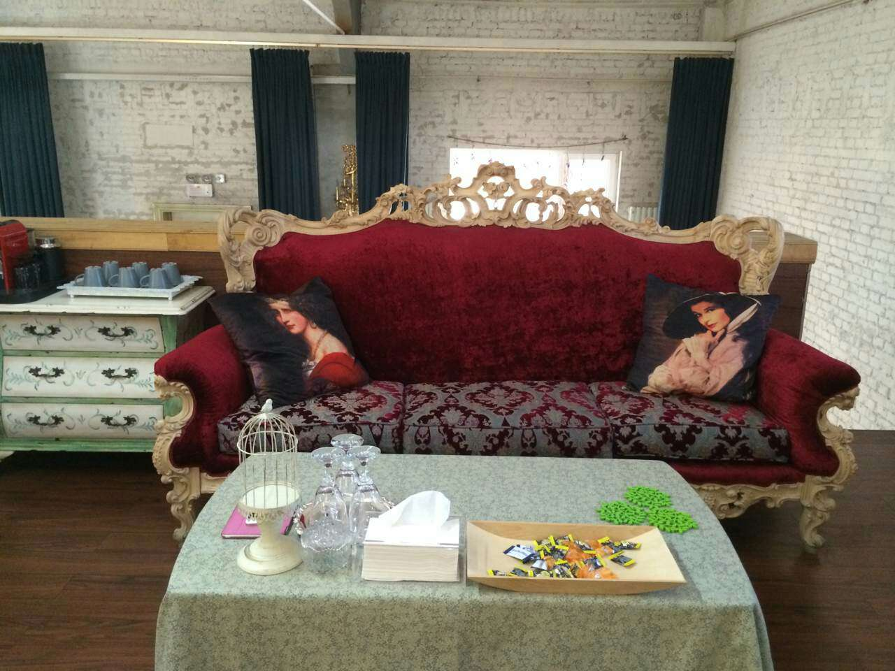
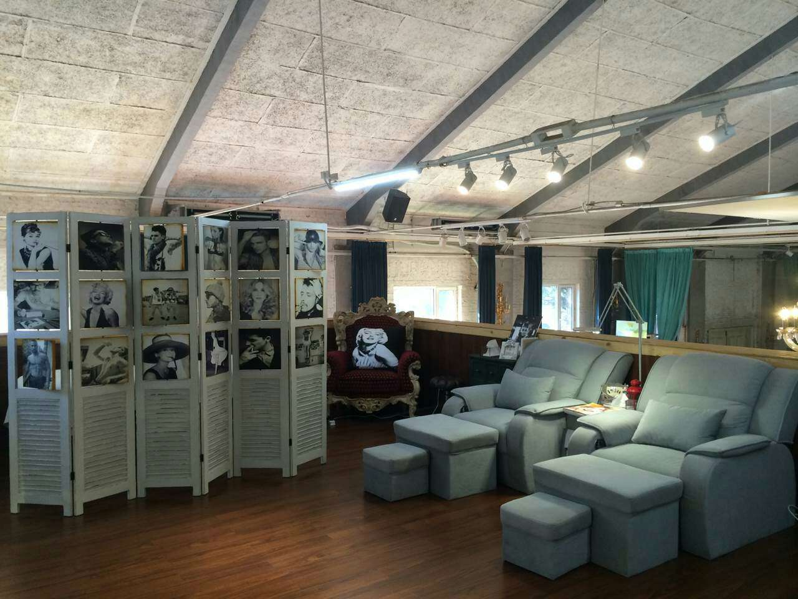
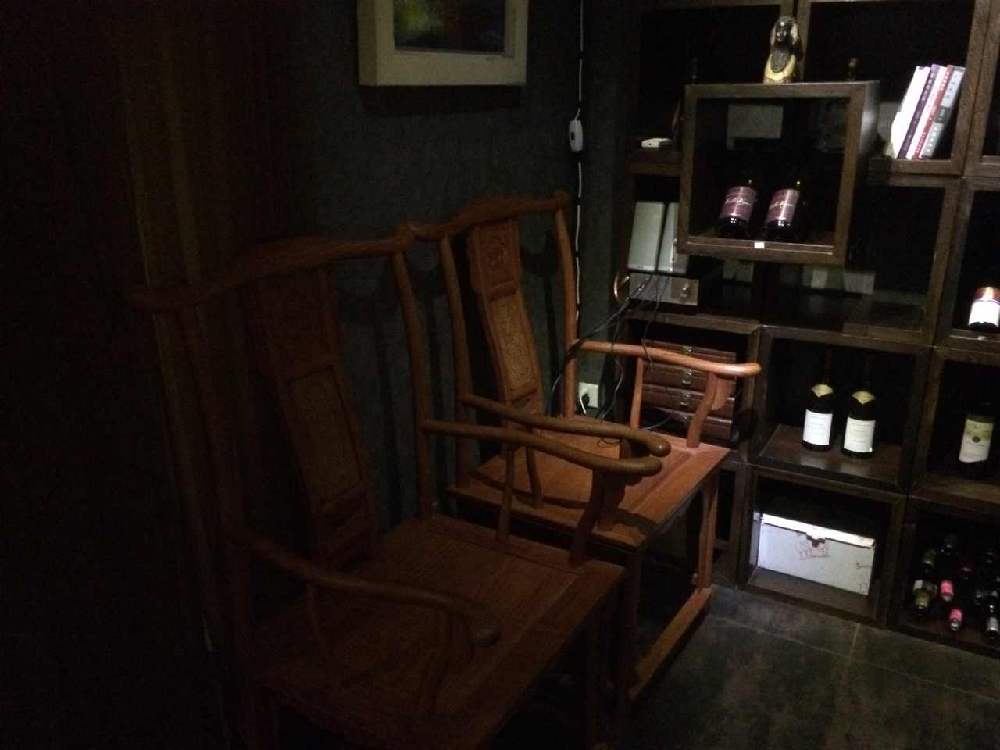
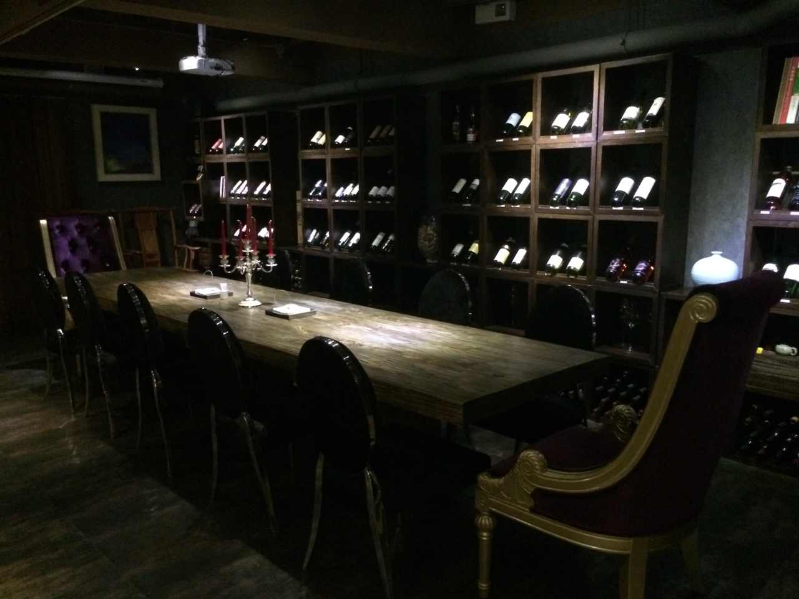

楼上店 —— 重构空间的新经济
Shops upstairs -- A new economy by reconstructuring space!
Presented by Xin Liu / Email: xinliu@ime.ac.cn
电商时代，实体商店何去何从？
In the era of Electronic Commerce, where shall physical stores go?
楼上店: 全新的形式与无与伦比的体验！
Shops upstairs: new style and distinct experience!

更低的店铺成本
Lower Cost for shops
 
更舒适的感受
More comfortible sense
 
更愉悦的氛围
More joyful atmosphere

加入我们，一起颠覆这个世界！
Join us, let's overturn the world!